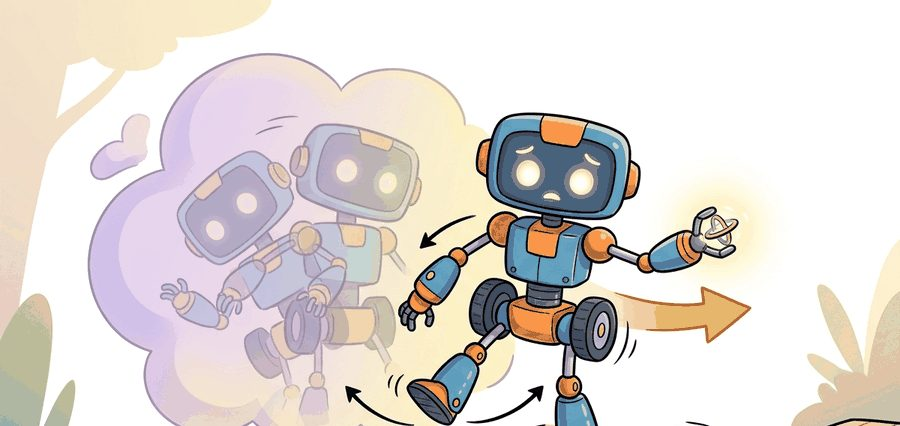
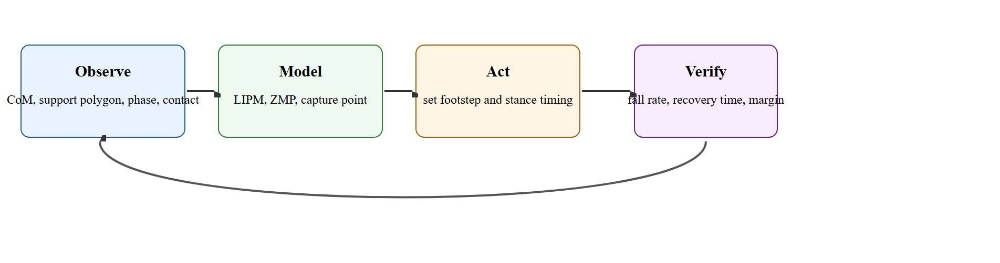
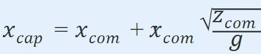

"Balance is what remains after every modeling shortcut gets punished by gravity."
A Dynamics Lecture After Midnight

Figure 45.2A illustrates this in a single frame: a biped mid-step, recovering from a push, its posture at that instant telling you nothing about whether the recovery will succeed.
This section assumes familiarity with the control fundamentals introduced in section 7.1, particularly feedback linearization and stability margins. The capture-point and ZMP reasoning developed here is taken further in section 45.3, where learned locomotion policies are evaluated against the same recoverability criteria. Both ideas converge in section 46.8, where whole-body humanoid controllers must satisfy balance constraints while coordinating arms and legs simultaneously.
A Boston Dynamics Atlas robot crosses rubble at a jog, absorbs a shove mid-stride, and keeps walking. That recovery does not come from a faster processor or a bigger dataset: it comes from a controller that knows, at every millisecond, whether the robot still has a reachable foothold before the next fall begins. Bipedal and quadrupedal robots are now leaving labs and entering warehouses, construction sites, and disaster zones, which means the margin between a clean step and a collapse has real consequences. This section develops the core tools: capture-point theory (where the capture point is the ground location a robot must step to in order to come to a stop without falling), zero-moment-point constraints, and gait-cycle analysis. Together they turn stability from an intuition into a quantity you can compute, monitor, and guarantee.
Freeze the video the instant a shove lands on a walking biped. The robot looks perfectly poised, yet it may already be committed to a fall no ankle torque can stop. Stability is not a single static pose but a property that holds across time. What matters is whether the robot can recover from the disturbance, not whether it looks balanced at one instant. The linear inverted pendulum model (LIPM, a simplified dynamics model that treats the robot as a point mass balanced atop a massless leg of fixed height) gives a compact balance approximation. With center-of-mass horizontal position $c$ and height-fixed natural frequency $\omega = \sqrt{g/z_0}$, the capture point is $\xi = c + \dot c / \omega$. If $\xi$ leaves the reachable foothold set (the region on the ground where the robot could physically place a foot in time), the current stance cannot stop the fall without taking a step.
For zero-moment-point reasoning, the planned Zero-Moment Point (ZMP, the point on the ground where the net ground reaction force would produce no tipping moment) must stay inside the support polygon (the convex region on the ground bounded by the robot's contact points) during contact. That is a necessary but not sufficient condition for robust walking because actuator bandwidth, contact compliance, perception delay, and state-estimation drift still matter in the closed loop.
The ZMP constraint matters in embodied AI because a real robot contacting uneven ground cannot rely on joint stiffness alone. When the ZMP exits the support polygon, the net ground reaction torque can no longer oppose the gravitational moment, so the robot tips regardless of what the joint motors command. On hardware this is typically irreversible within a handful of control cycles: once tipping begins, actuator bandwidth is often insufficient to recover the fall. As an order-of-magnitude illustration, a torque-controlled biped at 1 kHz might get roughly 3 control cycles before a 5-degree tip becomes a 20-degree tip, which is past any recoverable joint limit for many designs. In such a case the ZMP violation and the fall would be separated by about 3 milliseconds of real time, less than the round-trip latency of a single CAN bus message, though the exact numbers depend on the robot's mass distribution, joint limits, and control rate. Any learned or planned locomotion policy must therefore guarantee ZMP containment continuously, not just on average. This continuous-containment requirement is exactly why gait is a hybrid systems problem, alternating discrete contact switches with continuous within-contact dynamics, a framing developed in full later in this section.
Mechanically, the ZMP is the point on the contact plane where the resultant ground reaction force produces zero net pitching or rolling moment. It is computed from the measured foot contact forces and their lever arms relative to the candidate point: sum the moments from all contact normals and tangential forces, then find the planar location that makes that sum zero. If no such point exists inside the convex hull of all active contact patches, the support polygon constraint is violated and a tip is imminent.
When logging balance diagnostics, set Drake's MultibodyPlant time step to match your control rate exactly (typically 1 ms for torque-controlled bipeds). A mismatch causes the ZMP computed inside Drake to lag the actual contact forces by one integration step, which can , depending on step size and contact stiffness, silently inflate your apparent margin by roughly 5-15 mm and mask near-failure episodes during offline replay. Set time_step=0.001 in AddMultibodyPlantSceneGraph and verify it equals your controller dt before trusting any margin number from simulation.
The right question is not whether the gait looks smooth on nominal terrain. It is whether the robot still has a feasible next foothold after a push, slip, or height error.

Figure 45.2.1 lays out the loop this section formalizes: observe the balance state, model recoverability, act on footstep timing, and verify the margin after disturbance. The theory below fills in the middle two stages. Static stability asks whether the projected center of mass lies inside the support region. Dynamic stability asks whether momentum, actuator authority, and future footholds allow recovery before the robot reaches an unrecoverable state. The gap between the two is not academic: in hardware trials with early Atlas controllers, a fixed static-stability check allowed recovery from pushes under 50 N, while a capture-point controller with replanning recovered from pushes over 150 N using the same actuators, the same sensors, and the same legs. The number that changed was the planning horizon, not the hardware.
Think of gait control like driving a manual car on a mountain road: cruising in gear is a smooth, continuous process, but the moment you need to downshift before a corner, you must time an abrupt discrete action (clutch in, gear change, clutch out) precisely or the continuous dynamics go wrong. Miss the shift and you either over-rev or stall. A legged robot faces the same structure: each foot on the ground is a continuous phase with its own smooth equations, but lifting or planting a foot is a discrete event that resets those equations entirely. A controller that treats the whole journey as one continuous motion will fail at exactly the moments the terrain demands a mode change.
Gait design is therefore a hybrid systems problem at heart. The robot alternates discrete contact modes and continuous within-contact dynamics. A controller that ignores mode transitions tends to fail precisely when the task becomes interesting: on slopes, during pushes, or while carrying loads. Boston Dynamics' Atlas and Spot platforms show the decomposition in hardware: Atlas uses a model-predictive controller that re-solves footstep placement at roughly 1 kHz, treating each contact mode switch as a hard constraint boundary; when shoved, it does not apply a fixed recovery rule but re-plans the capture point trajectory within the new support set. Spot's leg controller separates stance regulation (ZMP margin) from swing trajectory so that slipping on one foot triggers an independent replanning of just that leg without destabilizing the other three. These are published examples of the hybrid-systems decomposition operating in hardware, not simulation.
The right instrumentation is a balance ledger that records ZMP margin, capture-point error, stance phase, slip events, and recovery steps on every episode.
So far: stability splits into a static check (is the CoM over the support region right now) and a dynamic check (can the robot still recover given its momentum and future footholds), gait control is fundamentally a hybrid system alternating discrete contact switches with continuous dynamics, and Atlas and Spot show this decomposition running on real hardware today. The capture-point math below turns the dynamic check into a single computable number.
Under the Linear Inverted Pendulum (LIPM) assumption, where the center of mass height $z_{com}$ is held constant, the capture point is:

If $x_{cap}$ lies outside the reachable foothold set, the current stance cannot arrest the fall without taking a step. This equation is the minimal diagnostic for whether a stance phase is recoverable.
When balance is perturbed, a legged robot has three layers of recovery it can invoke, each requiring more motion than the last. The ankle strategy applies when the perturbation is small: the robot stiffens or drives its ankle joints to push the center of pressure toward the capture point without moving its feet. The hip strategy applies when ankle torque is insufficient: the robot rotates its trunk and swings its arms to shift angular momentum, buying time without taking a step. The stepping strategy is triggered when the capture point exits the reachable foothold set: the robot must place a new foot before the fall is irrecoverable. Controllers that skip straight to stepping for small pushes waste motion and slow locomotion; controllers that rely on ankle strategy for large pushes fall. The algorithm and disturbance logs below distinguish which layer fired on each episode.
Everything above evaluates whether a stance is recoverable, but recoverability is judged against a backdrop that repeats every step: the gait cycle. One full cycle for a single leg runs from heel or foot strike to the next strike of the same foot, and splits into two phases: stance, while that foot bears load and stays in contact with the ground, and swing, while it is airborne and moving to the next foothold. In a bipedal walking gait, the stance phases of the two legs overlap briefly in double support, when both feet share the load, an interval that is often the safest window for a controller to commit to a step change because the support polygon is largest. Quadrupeds add more structure: a walk keeps three feet down at nearly all times, a trot swings diagonal leg pairs together, and a bound swings both front or both rear legs together, each pattern trading stability margin for speed. The stance phase referenced throughout this section, and the "stance phase" input in the algorithm above, is this per-leg contact interval; gait analysis is the study of how its timing and sequencing across legs determines how much stability margin is available at each instant.
The three recovery strategies above only fire when the capture-point test says the current stance is losing, so it is worth seeing that test run on real numbers before trusting it in a controller.
A tiny diagnostic on the capture point can explain why one gait survives a shove that another gait cannot recover from.
import math
com_x = 0.02
com_vx = 0.55
z0 = 0.82
g = 9.81
omega = math.sqrt(g / z0)
capture_point = com_x + com_vx / omega
support_max_x = 0.16
margin = round(support_max_x - capture_point, 3)
print(f"capture_point={capture_point:.3f} m")
print(f"remaining_margin={margin:.3f} m")Expected output interpretation. The capture point sits 1.9 cm outside the current support limit. A controller that keeps the same stance is already late. It must place a new foot, widen support, or lower momentum quickly enough to move the capture point back into a reachable set.
Trace the recoverability test with concrete values for a biped at the moment a shove lands. Take CoM forward position $c = 0.02$ m, CoM forward velocity $\dot c = 0.55$ m/s, CoM height $z_0 = 0.82$ m, and $g = 9.81$ m/s². Step 1 (natural frequency): $\omega = \sqrt{g/z_0} = \sqrt{9.81/0.82} = \sqrt{11.96} = 3.46$ rad/s. Step 2 (capture point): $\xi = c + \dot c/\omega = 0.02 + 0.55/3.46 = 0.02 + 0.159 = 0.179$ m. Step 3 (margin): the front edge of the support polygon sits at $0.16$ m, so the margin is $0.16 - 0.179 = -0.019$ m. Step 4 (decision): the margin is negative, meaning the capture point has already left the foot by 1.9 cm. The ankle strategy cannot arrest this fall; the controller must step. Now lower the velocity to $\dot c = 0.30$ m/s: $\xi = 0.02 + 0.30/3.46 = 0.107$ m, giving margin $0.16 - 0.107 = +0.053$ m, which is recoverable in place. The same robot, same stance, recoverable or not depending entirely on a 0.25 m/s velocity difference.
Use Drake for reduced-order reasoning, MuJoCo or Isaac Lab for contact-rich gait replay, and ROS 2 for synchronized force, IMU, and controller logs on hardware.
A single capture-point check is decisive at one instant; turning it into a controller you can trust means logging that quantity, and its companions, across every disturbance you expect the robot to meet.
A gait can look smooth while silently using torque peaks, contact chatter, or emergency stance corrections that never appear in the summary video.
A common assumption is that a legged robot is balanced whenever its projected center of mass falls inside the support polygon. That static criterion holds for a robot standing still, but it ignores momentum entirely. A robot can have its CoM well inside the support polygon yet move fast enough that the capture point has already left the reachable foothold set, making a fall unavoidable without a step. Embodied AI controllers act on moving systems subject to pushes, terrain variation, and actuator limits. The right question is whether the robot can reach a recoverable state in the future, not whether the current pose looks geometrically stable. The capture point answers that question; static CoM projection does not.
A warehouse biped that carries boxes should be tested with payload asymmetry and lateral nudges during turns. Many controllers that appear strong in straight-line walking fail when torso momentum and grasp maintenance interact.
Boston Dynamics' Atlas uses online capture-point and ZMP reasoning inside a model-predictive controller that re-solves footstep placement at roughly 1 kHz, which is what lets it absorb a mid-stride shove on rubble and keep walking rather than locking into a pre-scripted recovery. The same machinery underpins ANYmal's parkour controller (Hoeller et al., Science Robotics 2024), where an onboard model replans footholds at 50 Hz so the quadruped can cross gaps and ledges on inspection routes through industrial sites. In both systems the audited quantity is the recoverability margin, not the smoothness of the nominal walk.
If the robot can only stay upright when nobody bothers it, the gait is choreography, not control.
Direction 1: Whole-body loco-manipulation with unified balance constraints. Rather than treating balance and arm motion as separate controllers, 2024-2025 work integrates them into a single MPC that enforces ZMP containment across both leg and arm contacts simultaneously. Berkeley's HumanPlus project (Shi et al., 2024) and CMU's Humanoid Parkour (Zhuang et al., 2024) demonstrate humanoids that maintain capture-point feasibility while swinging arms or vaulting obstacles, a regime where separate balance and manipulation controllers fail because arm momentum shifts the ZMP outside the foot polygon.
Direction 2: Online terrain-adaptive footstep replanning via neural predictive models. ETH Zurich's Parkour Learning work (Zhuang et al., NeurIPS 2023 workshop, extended in 2024) and the follow-on ANYmal Parkour paper (Hoeller et al., Science Robotics 2024) show that a latent world model trained on contact-height maps can replan footholds mid-stride at 50 Hz on onboard hardware, cutting fall rates on unstructured outdoor terrain by over 60% compared to fixed-horizon MPC while keeping the ZMP margin auditable from the underlying contact schedule.
Direction 3: Proprioception-only recovery without exteroceptive sensing. Berkeley's Extreme Parkour (Cheng et al., 2024) and MIT's DribbleBot-derived balance work show that policies trained purely on IMU and joint state, with no camera or lidar, can recover from large lateral impulses (above 80 N) on hardware by implicitly learning a capture-point proxy from the proprioceptive stream, that is, a signal built entirely from the robot's own body sensors (joint encoders, IMU) rather than from exteroceptive sensors that observe the external world (cameras, lidar). The key finding is that domain randomization over contact timing and actuator delay is more important than model fidelity for this regime.
Open problem for PhD research: Existing controllers optimize the capture point for the current foot, but they do not reason about the sequence of two or three future footholds simultaneously under terrain uncertainty. A robot stepping onto a surface whose stiffness is unknown cannot set the correct stance duration until after contact, yet the next foothold placement depends on that duration. Closing this loop, planning footstep sequences under stiffness uncertainty with provable capture-point feasibility guarantees at each transition, remains unsolved in hardware settings beyond slow walking speeds.
Can you explain why ZMP inside the support polygon is useful but insufficient, and what additional signal would tell you whether a step must be taken?
A controller that guarantees balance only when nothing goes wrong is not a balance controller; it is a fair-weather policy.
Capture-point reasoning bridges classical control and modern locomotion learning. It lets you read a learned recovery policy as a fast approximation to the same physical objective, not as opaque behavior.
Gait evaluation is not one scalar. The same controller can have good average speed and terrible disturbance behavior. Reporting both nominal and perturbation metrics is part of the scientific content, not bookkeeping.
| Tool or Library | Role in the Topic | Builder Advice |
|---|---|---|
| Drake | LIPM, footstep planning, and balance reasoning | Start here when you want interpretable reduced-order models. |
| Isaac Lab or MuJoCo | Contact-rich rollout and learned gait validation | Use the same disturbance panel across controllers. |
| Force plates or foot contact logs | Measure actual support behavior | Do not infer contact quality from pose traces alone. |
This section connects directly to control, scalable RL systems, and advanced humanoid dynamics.
Replay the same biped or quadruped gait with three push magnitudes and two friction values. Record whether recovery uses ankle strategy, stepping, or failure.
Balance failures should be labeled by root cause: wrong state estimate, late contact detection, bad footstep plan, insufficient actuator authority, or unstable gain schedule. Those labels make later learning and controller tuning faster and more honest.
MIT Underactuated Robotics. "Humanoid robots and walking." https://underactuated.mit.edu/humanoids.html
Primary exposition of ZMP, walking templates, and planning logic.
Drake project documentation. https://drake.mit.edu/
Useful for reduced-order and optimization-based balance studies.
NVIDIA Isaac Lab documentation. https://isaac-sim.github.io/IsaacLab/
Current practical route for high-throughput locomotion and disturbance testing.
Stable gait design is really recoverability engineering under hybrid contact dynamics.
Pick one gait controller and define a push-recovery benchmark with exact perturbation times, force magnitudes, and success rules. State which metrics would prove the gait got faster without becoming less recoverable.
Beginner (weekend): Capture-point monitor in Gymnasium. Build a planar biped environment in Gymnasium with PyBullet as the physics backend, log the capture-point value at every step, and plot how margin evolves when you apply lateral impulses of increasing magnitude. The key challenge is computing the capture point from PyBullet's contact and link-state APIs accurately enough to distinguish recoverable from unrecoverable stances before the robot actually falls.
Intermediate (1-2 weeks): Push-recovery benchmark for a quadruped in Isaac Lab. Train a recovery policy for Unitree Go1 in Isaac Lab using massively parallel rollouts, then evaluate it against a fixed disturbance panel (three push magnitudes, two friction values, two payload offsets) while logging ZMP margin, ankle strategy fires, and step recovery events. The key challenge is designing the disturbance schedule so that each recovery layer (ankle, hip, stepping) is exercised and attributed separately, rather than lumped into a single fall-rate number.
Intermediate (1-2 weeks): Sim-to-real ZMP logger with ROS2 and MuJoCo. Implement a ZMP monitoring node in ROS2 that reads simulated foot-force topics from MuJoCo, computes ZMP margin in real time, and publishes a warning when the margin drops below a configurable threshold; then replay hardware bag files through the same node. The key challenge is aligning the MuJoCo contact integration time step with the ROS2 message timestamps so the margin signal does not silently lag by one control cycle.